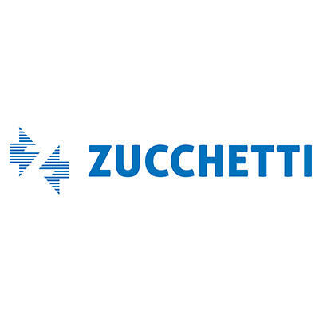

una sorpresa per
Sandy
Ho raccolto alcuni dei nostri momenti migliori.
Scorri con calma, non c'è fretta.
Siamo arrivati alla fine.
Ma manca ancora una cosa.
resta qui un attimo…

Comunicazione di Sinistro · Flotta Aziendale
Gentile titolare del veicolo, La informiamo che un mezzo della nostra flotta aziendale è rimasto coinvolto in un sinistro con la Sua vettura in sosta.
Di seguito i riferimenti per procedere con le pratiche di constatazione tramite la nostra assicurazione Corporate. La invitiamo ad accedere ai documenti.
Torniamo a noi...
una sorpresa per
Ho raccolto alcuni dei nostri momenti migliori.
Scorri con calma, non c'è fretta.
Siamo arrivati alla fine.
Ma manca ancora una cosa.
resta qui un attimo…
Non vedevo l'ora che arrivasse questo momento...
Dal giorno in cui i nostri sguardi si incrociarono, tutto ha preso un ritmo diverso. Tra le prime uscite, i primi litigi, la prima vacanza, una laurea. Tutto è più bello se ci sei tu.
Ti amo infinito + 2.
(Apprezza l'originalità da informatico per chiederti di essere il tuo BOY)
10 · 10 · 2026
Da oggi ufficialmente Sandy e Endy 💛